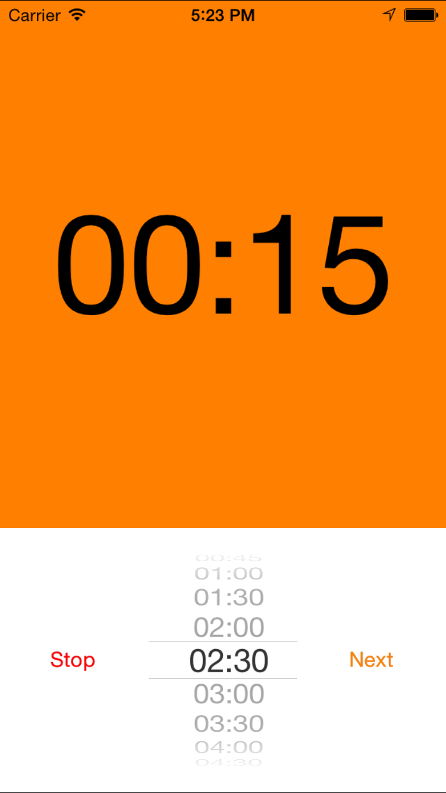
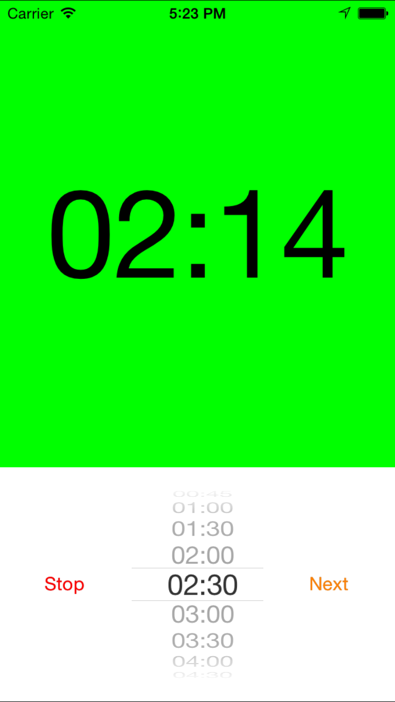
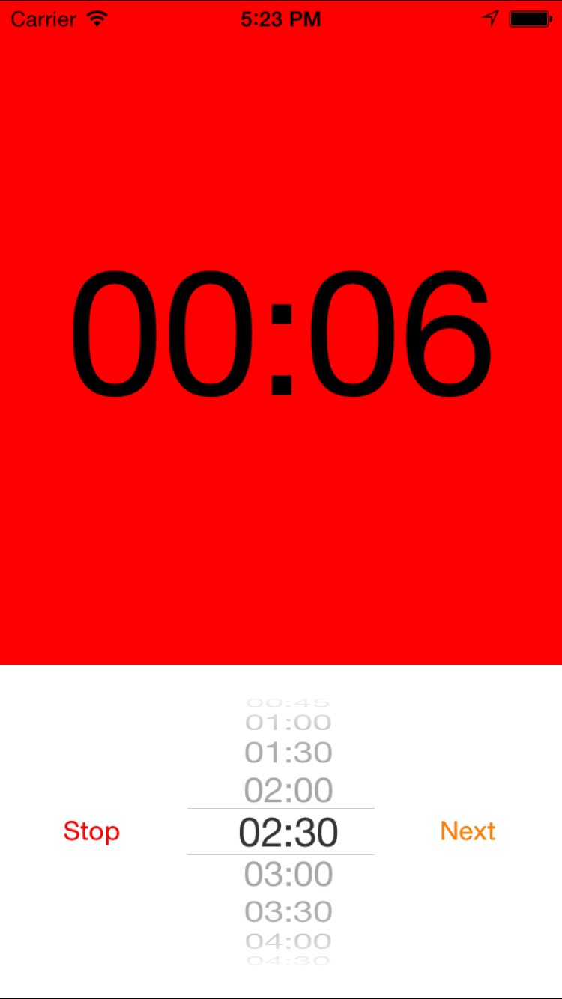
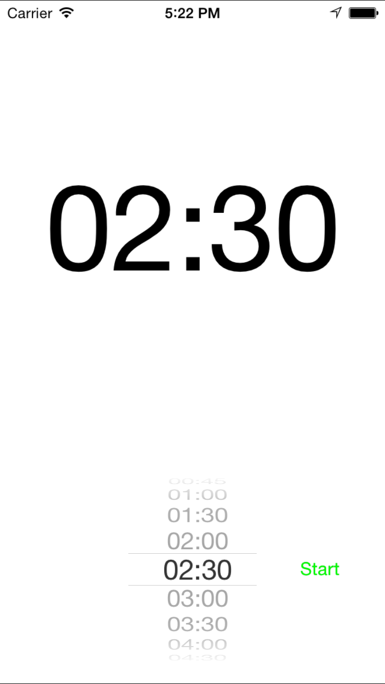

Scrum Timer iOS App for iPhone and iPad is a Repeating timer with audible 'hurry up' and 'out of time' notifications. Can be used for stand-up meetings and other scrum activities.
Setup the total meeting time and the number of attendees and the Scrum Timer will limit the time per attendee. The 'Next' button resets the timer when an attendee is ready before the timer expires.
running


critical
stopped
